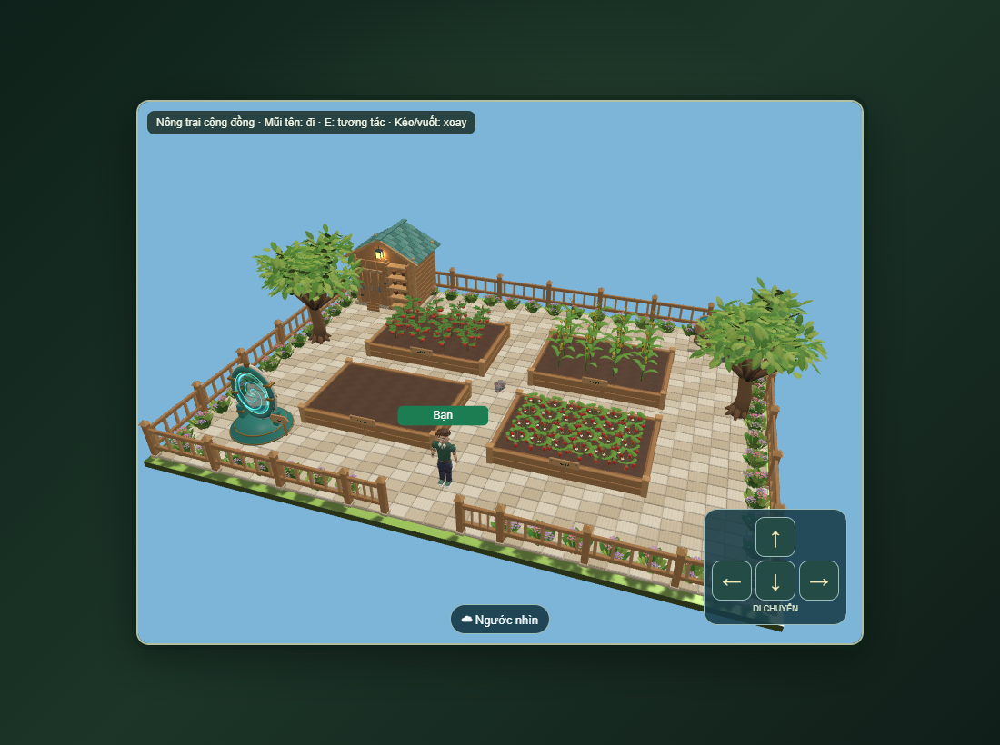
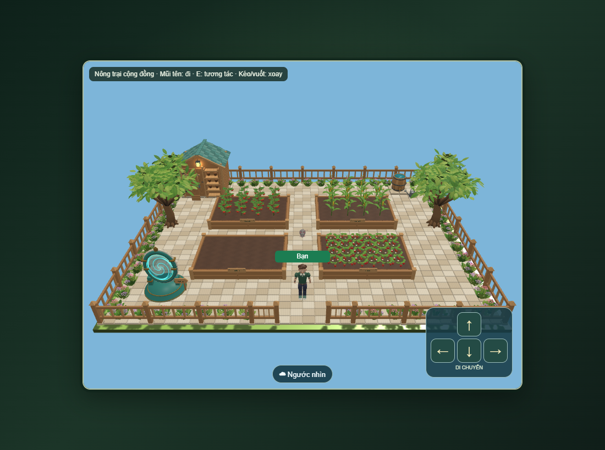
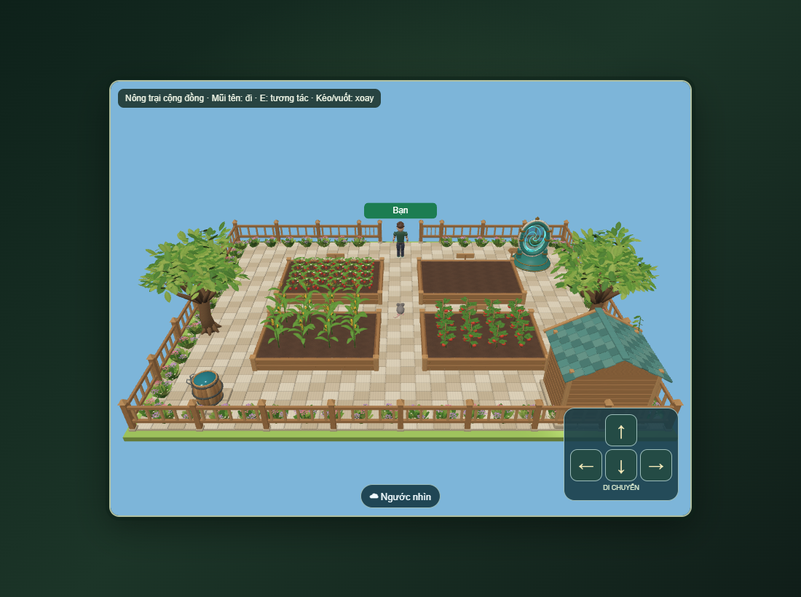
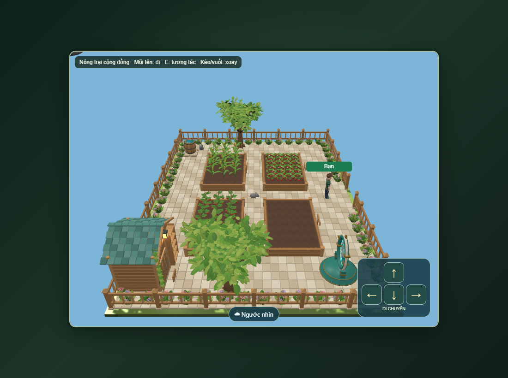
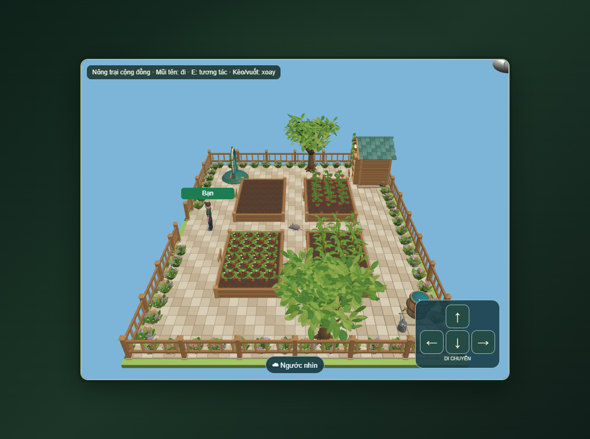
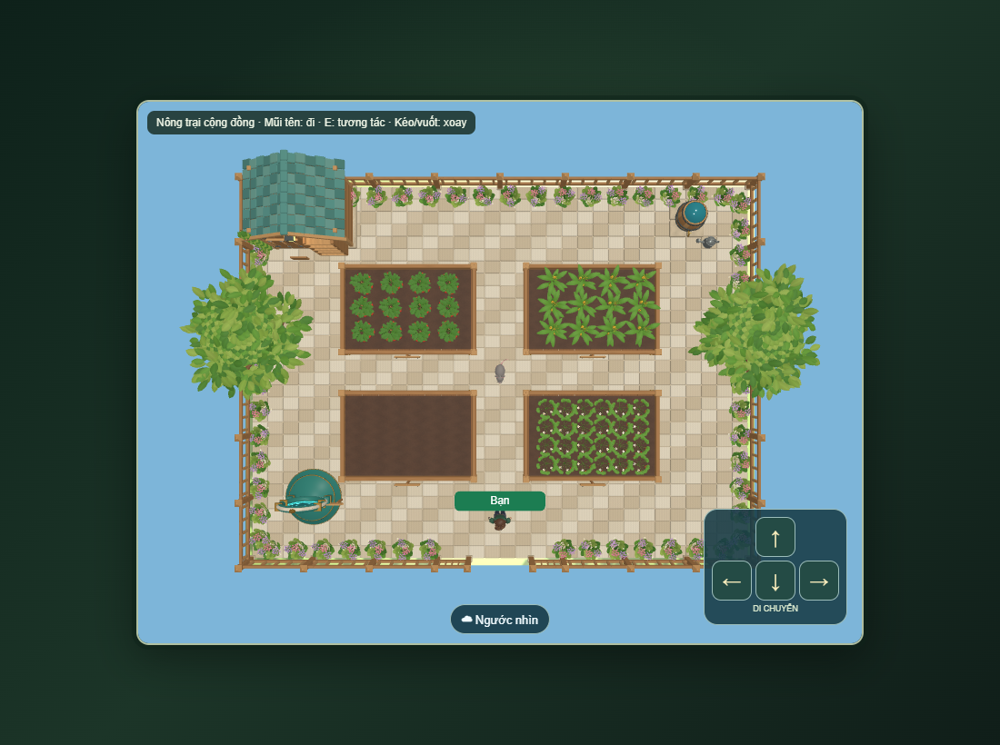
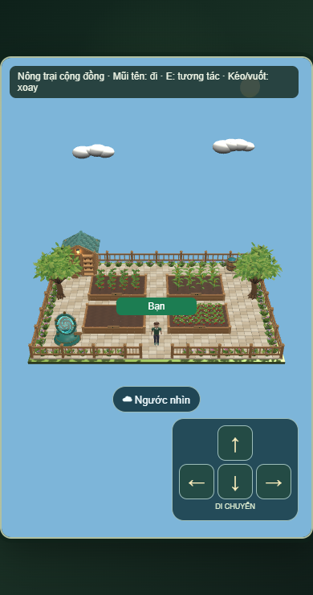
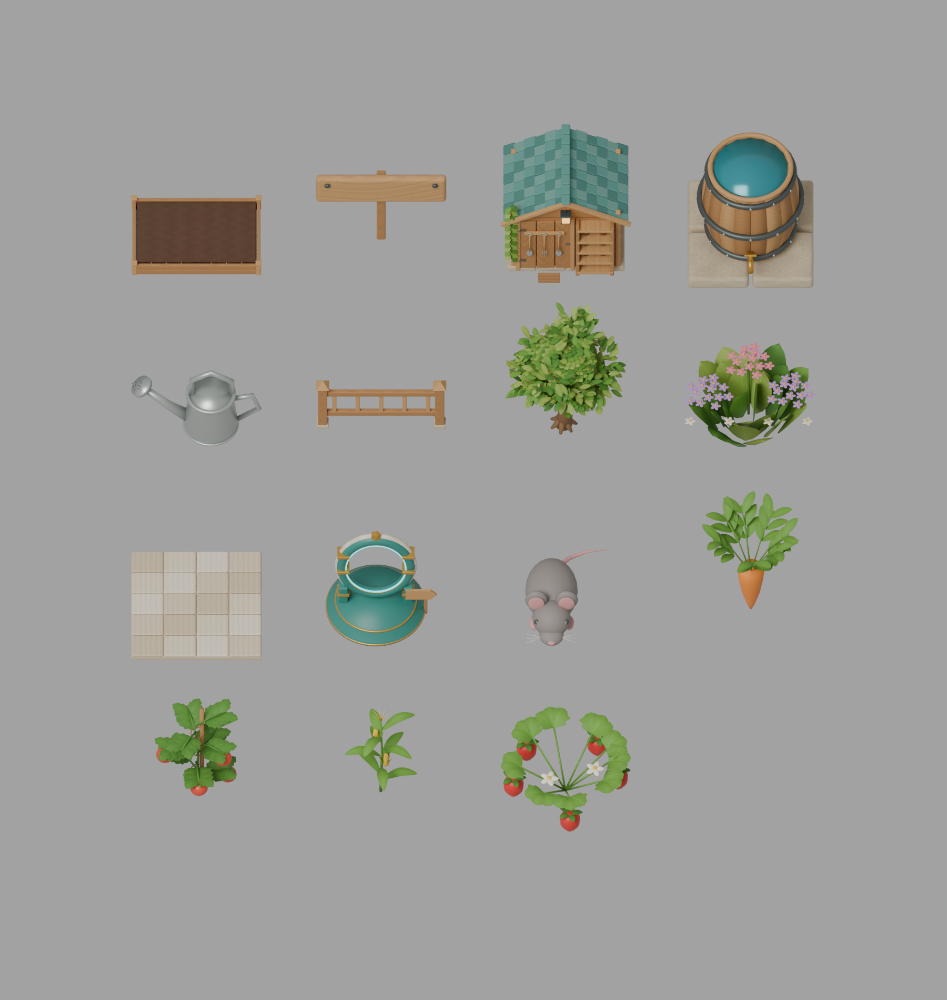

Vườn cộng đồng · Map đã ghép bằng GLB
Ảnh chụp từ Babylon.js dùng các asset thực tế, cùng một scene ở sáu góc. Chữ biển tên dùng lớp chữ riêng để giữ đúng dấu tiếng Việt. Nhấn ảnh để phóng to.

Ảnh chụp map thực tế trong môi trường kiểm thử cục bộ.Dữ liệu chụp minh họa tách biệt với server: luống 1 trống, luống 2 cà chua, luống 3 bắp, luống 4 dâu tây. Map production vẫn lấy trạng thái vườn dùng chung từ máy chủ, không tự gieo cây mẫu.
Sáu góc map thực tế

Trước
Sau
Trái
Phải
TrênPhối cảnhKhung nhìn điện thoại

Khung 390 px · điều hướng và nút góc nhìn tách nhau.Các asset đã dựng
Ảnh render trực tiếp từ GLB bằng Blender; từng vật thể được căn theo kích thước hiển thị riêng. Thứ tự từ trái sang phải, từ trên xuống: luống đất, biển tên, nhà kho, thùng nước; bình tưới, hàng rào, cây bóng mát, cụm hoa; tấm lát, khung cổng, chuột, cà rốt; cà chua, bắp, dâu tây. Mặt xoáy của cổng được thêm và chuyển động bằng shader trong game.

Các nguyên tắc đã giữ
Phím mũi tên và D-pad dùng chung điều khiển; thả thì dừng. Chặn đi xuyên luống và vật cản, chỉ tương tác luống ở gần. Chữ “Luống 1–4” đúng dấu. Cây chuyển giai đoạn theo dữ liệu game; vườn dùng chung, túi đồ riêng. Đi đến cổng xoáy mới thoát. Ánh sáng, thời tiết và ngày đêm dùng hệ thống hiện có.